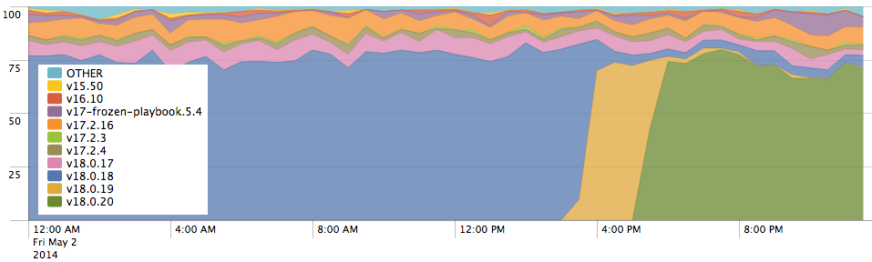

The future of online is offline
Building modern web applications
by Matt Andrews, FT Labs (mattandre.ws / @andrewsmatt)
FT App History
- FT originally built native apps for iPhone & iPad
- Early 2011: Apple launch App Store Subscriptions, FT launch HTML5 web app
- August 2011: FT pulls native apps from iTunes
- Now: iOS, Android, Windows, all major modern desktop browsers
Summary
- No review / approval process & automatic updates
- Instant install
- One app, many platforms
- Direct relationship with readers
- Apple don't take 30% cut
- Native-ish: homescreen icon, swiping, offline, fast (enough)
The catch?
They're really difficult to make well :(Offline challenges
- Caching
- Backwards compatibility
Caching for offline
Naive approach
ifdevice is online, load from the webelseload from cache- Browser even has handy method for checking connection:
navigator.onLine
What does online mean anyway?
At best, that the device is connected to a wired or wireless routernavigator.onLine doesn't work
Fun fact:
On Desktop Firefox navigator.onLine
is only false when File » Work Offline is ticked
Who even uses that anyway?
So how do we know if we're online?
You don't need to know
Live with uncertainty
- Always assume the device is offline, load from cache
- Then try the network for new data in the background
(Also stops slow connections ruining your site)
For a page to load offline,
you need to use the HTML5 Application Cache
Manifest looks like this:
CACHE MANIFEST
# 2014-05 v1
/lib/fonts/BentonSansBold.ttf
/lib/img/startupscreen/splash-logo.png
NETWORK
*
And to use it you need to add an attribute to <html>
<DOCTYPE html>
<html manifest="mywebapp.manifest">
Sadly, it's not quite that easy
- Leaks storage (workarounds exist)
- Inflexible and unintuitive API
- Makes browser susceptible to scary man in the middle attacks… whether you use it or not
- Will soon be replaced by Service Worker
But…
- It does work
- across 80%+* of browsers (iOS, Android, Chrome, Opera, IE10+)
- Only Chrome and Firefox have committed to building Service Worker implementations
* http://caniuse.com/offline-apps
AppCache OK
- Yes it's ugly for developers
- But it enables amazing experiences for users
- There are use cases where it works well
- Unfortunately, building a newspaper app isn't one of them
Service Workers
The spec says:
Service Workers are a new browser feature that provide event-driven scripts that run independently of web pages […] They have access to domain-wide events such as network fetches. ServiceWorkers also have scriptable caches. Along with the ability to respond to network requests from certain web pages via script, this provides a way for applications to "go offline".https://github.com/slightlyoff/ServiceWorker/
A Service Worker:
- is a javascript file that you write and can be 'installed' onto your website
- lets you to do things with requests between browser and server
- has special caches that you can reliably store content
More code than AppCache - but you can read what it does!
// Install process
this.oninstalled = function(event) {
var myCache = new Cache(
'/lib/fonts/BentonSansBold.ttf',
'/lib/img/startupscreen/splash-logo.png'
));
// The coast is only clear when all the resources are ready.
event.waitUntil(myCache.ready());
// Add Cache to the global so it can be used later during onfetch
caches.set("my-cache", myCache);
};
// (scroll for more)
// Request handling
this.addEventListener("fetch", function(e) {
e.respondWith(caches.match(e.request));
});
Backwards compatibility
Unlike native apps,
offline websites only download updates
when they're open
and only applies those updates on refresh
App start events split by version of client side code
Guidance
- Expect some users to get stuck, add tools to help users recover their apps
- Test different versions of client side code against different backend versions
- Add monitoring
- Add buttons to recovery tools that appear after a CSS animation if JS fails
- Version everything - API endpoints, data formats
- Client side database migrations are painful. Store data in its simplest form (JSON better than HTML)
Summary
- Offline websites are possible today, with enough persistence
- … but expect some users to get stuck
- Service Worker will make things better (but only on Chrome & Firefox)
- Test, measure and monitor everything
Questions?
@andrewsmatt
Offline Web Workshop
I'm running a workshop at SmashingConf on
the Offline Web in September in Freiberg
- Email: matthew.andrews@ft.com
- Our open source: github.com/ftlabs
- Jobs: labs.ft.com/jobs